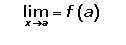
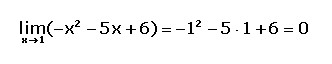
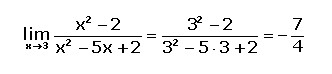
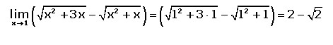

Limites
Cálculo de límites en Cálculo diferencial
El cálculo de límites es una operación básica para un ingeniero, esto abre la puerta a muchos más conocimientos y en este tema le daremos un reapaso a como se realiza la resolución de limites.
Digamos que tenes una función: f(x) y esta es una función que recae dentro de las polinómicas, racionales, radicales, exponenciales, logarítmicas, etc. y está se encuentra definida por el punto «a». Si todo esto se cumple entonces su representación seria la siguiente:
Ahora todos atentos a estos ejemplos por que son muy simples pero entre mejor se comprenda (comprender no implica repetir 1000 veces hasta que se aprenda) se podrán realizar más ejercicios con precisión.
Para calcular un limite primero debemos saber a cuanto tiende «X» si por ejemplo como en el ejemplo de arriba X tiende a «a» entonces cualquier variable x dentro de la función sera cambiada por «a», esto es una simple sustitución.
Ejemplo 1: En el siguiente ejemplo tenemos que «x tiende a 1» por lo cual reemplazaremos todas las «x» en la función por 1. Al realizar el anterior procedimiento simplemente se resuelve el problema sumando, restando, dividiendo, multiplicando, etc. Teniendo en cuenta todos los elementos dentro de la función.
Ejemplo 2: En esta ocasión «x tiende a 3» por lo cual se sustituyen todas las x y se realiza las operaciónes correspondientes.
Ejemplo 3: Ahora podemos ver en este tercer ejemplo una estructura con raíces cuadradas, si bien es lo mismo que los anteriores ejemplos en estos limites debemos tener en cuenta que primero se realizan las operaciones dentro de la raízes cuadradas
No se puede calcular el limite límite porque el dominio de definición se encuentra entre los intervalos [0, ∞), por tanto no puede tomar valores que se acerquen a -2 (como se especifica esto puede cambiar si el dominio de definición incluye números negativos dándonos la habilidad de explorar -∞).
Toque aqui para saber mas sobre Cálculo de límitesVideo de ayuda